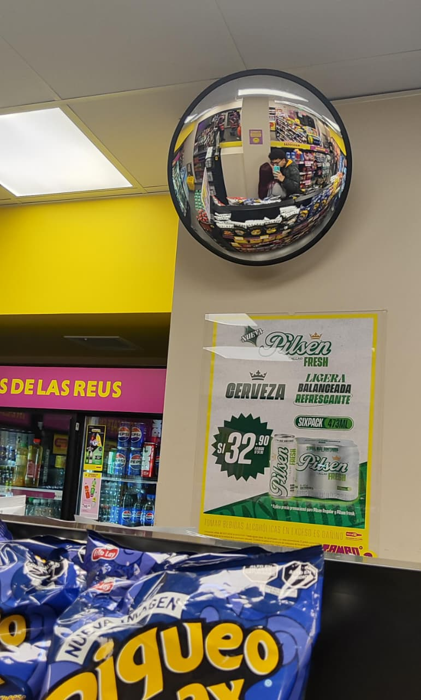
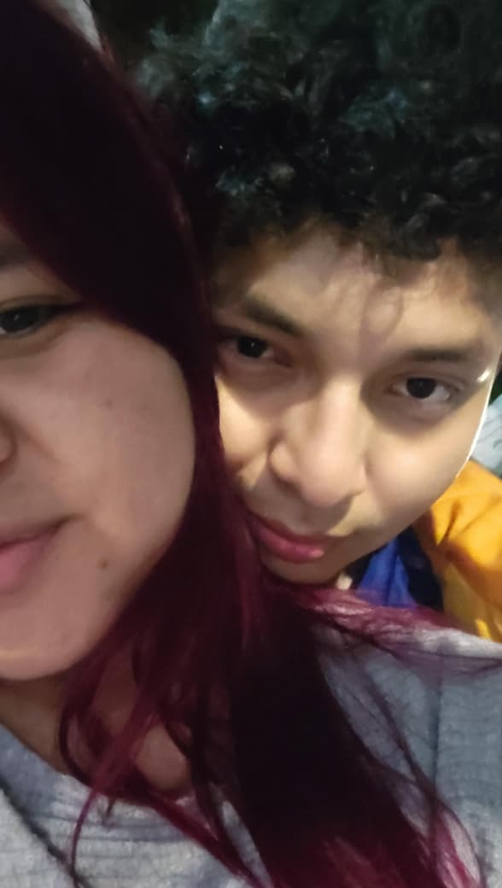
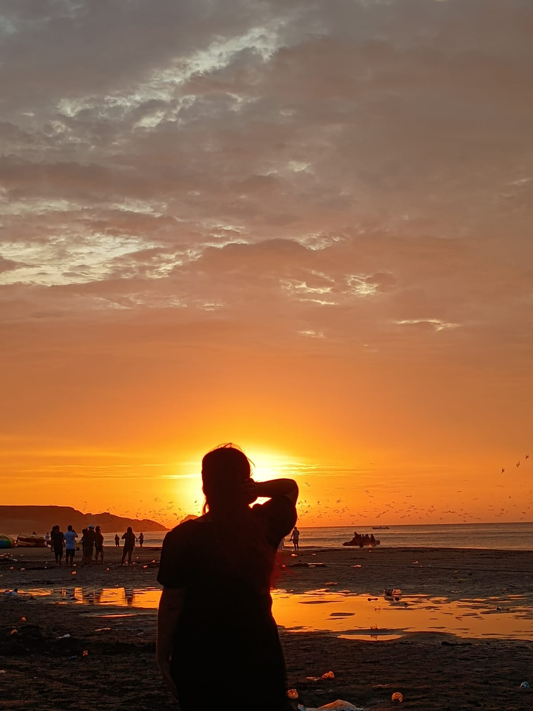
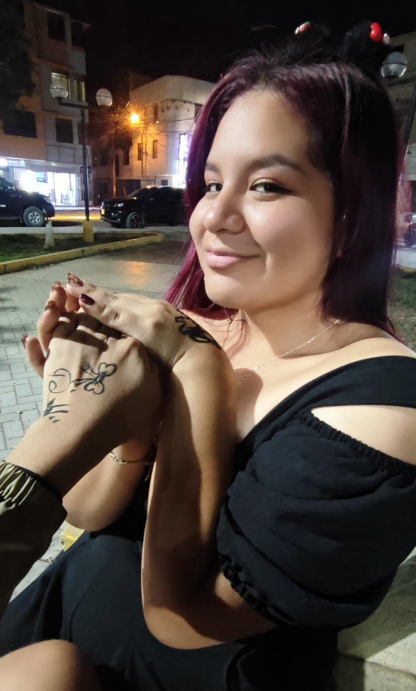
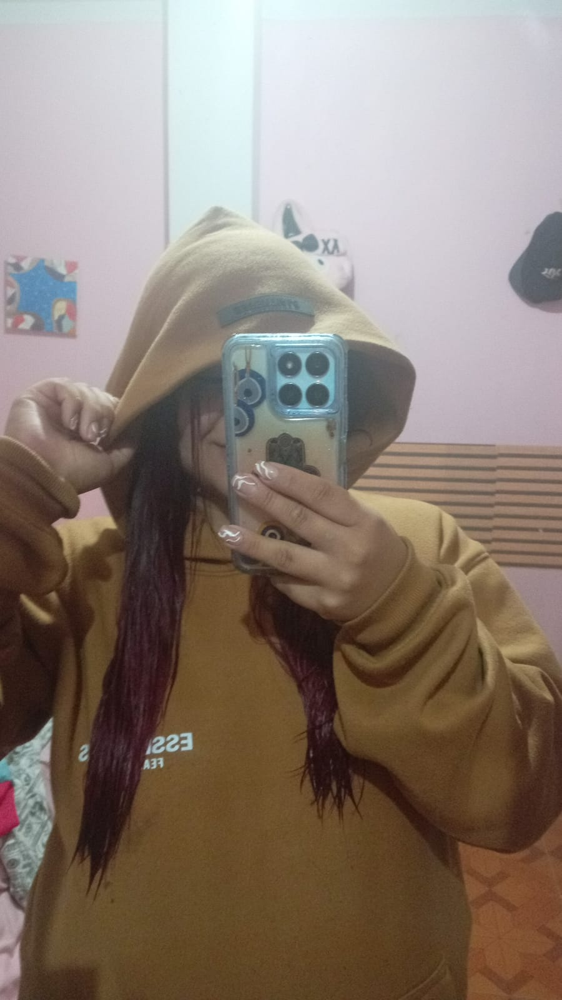

×







Mi amor 💕
Hoy quiero hablarte con el corazón en la mano, porque este día celebra el amor… pero yo te celebro a ti todos los días 💖. Agradezco tanto que estés en mi vida, porque desde que llegaste todo se siente más bonito, más ligero y más verdadero ✨.
Me encanta cómo, sin darte cuenta, tienes el poder de cambiar mi día completo con un solo mensaje 📱💗, con tu risa 😊, con tu forma de preocuparte por mí y con esos detalles pequeños que para otros pueden parecer simples, pero para mí son gigantes 🌷. Contigo aprendí que el amor vive en lo cotidiano: en preguntar si comí 🥺🍽️, en desear buenas noches 🌙, en cuidar y dejarse cuidar 🤍.
Gracias por tu paciencia 🫶, por tu ternura 💞 y por entenderme incluso cuando no sé explicar lo que siento. Gracias por escucharme 🎧, por apoyarme 🙌 y por no soltar mi mano cuando más lo necesito 🤝. Tu forma de estar conmigo vale oro 💛.
Amo cada recuerdo que construimos juntos 📸✨ — nuestras conversaciones largas 🗣️💓, las risas que salen sin aviso 😂, los momentos tranquilos donde no hace falta decir nada 🤫❤️ y esas locuras que solo tú y yo entendemos 🤭. Cada instante contigo se guarda en mi memoria como un tesoro 🧡.
Quiero que nunca olvides lo especial que eres para mí 🌹. No solo por lo que haces, sino por lo que eres: tu manera de pensar, de sentir, de querer bonito… todo en ti tiene una luz propia que me enamora cada día más 💫.
Sueño con seguir caminando contigo 🚶♂️🚶♀️, seguir creciendo, aprendiendo y eligiéndote siempre 💍💌. No prometo ser perfecto, pero sí darte un amor sincero, leal y lleno de cariño ❤️🔥.
Te amo hoy 💗, mañana 💞 y siempre 💘.
Feliz San Valentín, mi vida 🌹✨
Para ti, My Darly Jacely 💖
Con todo mi corazón 💘
Tu Luis Angel💞.
L ♥ D




